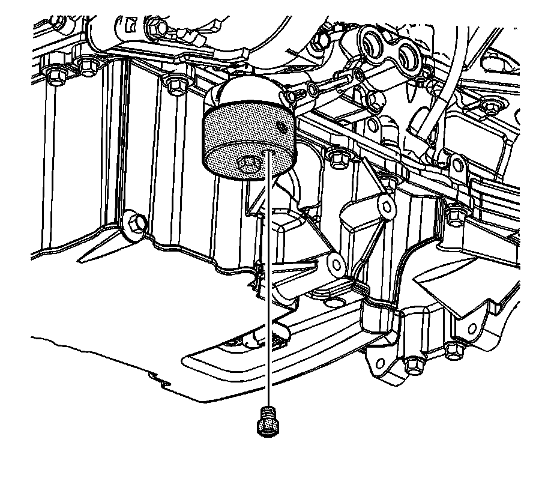
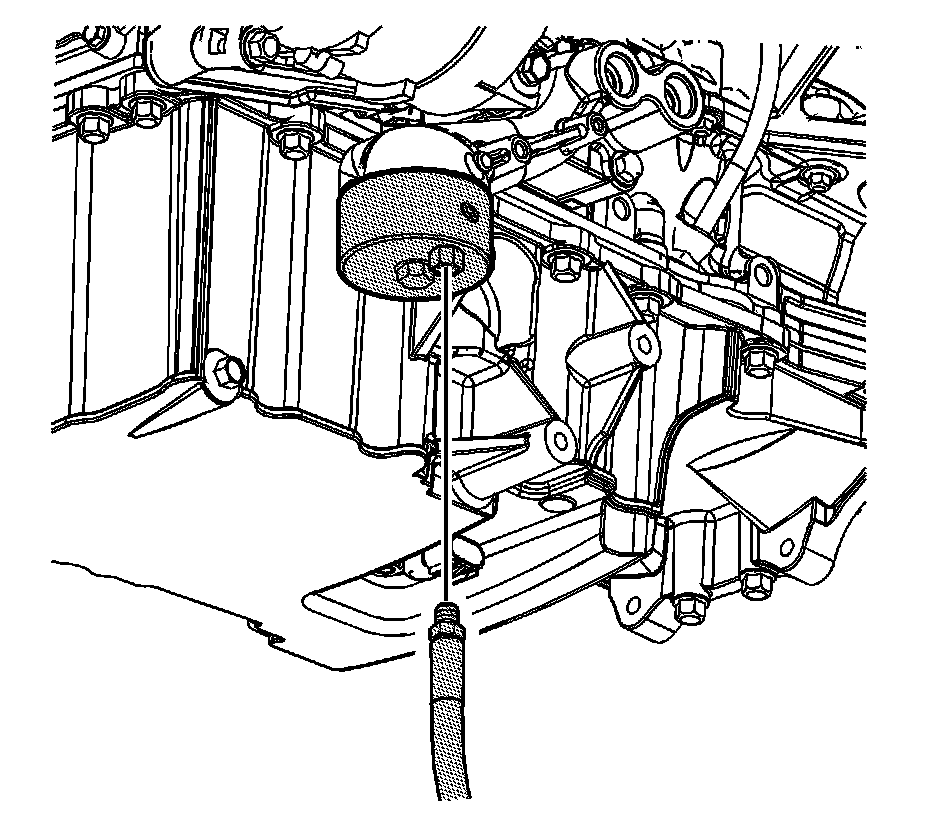

Oil Pressure Diagnosis and Testing
Oil Pressure Diagnosis and Testing
Tools Required
* J 21867 Pressure Gage
* J 42907 Oil Pressure Tester
1. With the vehicle on a level surface, run the vehicle for a few minutes, allow adequate drain down time, 2-3 minutes, and measure the oil level.
2. If required, add the recommended grade engine oil and fill the crankcase until the oil level measures full on the oil level indicator.
3. Run the engine briefly, 10-15 seconds, and verify low or no oil pressure on the vehicle gage or light.
4. Listen for a noisy valve train or a knocking noise.
5. Inspect for the following conditions:
* Oil diluted by water or glycol antifreeze
* Foamy oil

6. Remove the oil filter.

7. Install the J 42907 onto the oil filter adapter.

8. Install the 1/8 NPT fitting from the J 21867 into the port on the J 42907 .

9. Install the J 21867 flexible hose to the J 42907 .
10. Run the engine and measure the engine oil pressure.
11. Compare the readings to Engine Mechanical Specifications (Specifications) .
12. If the engine oil pressure is below specifications, inspect the engine for 1 or more of the following conditions:
* Oil pump worn or dirty. Refer to Oil Pump Replacement (Oil Pump Replacement) , Oil Pump Disassemble (Overhaul) and Oil Pump Cleaning and Inspection (Overhaul) .
* Oil pump-to-engine block bolts loose. Refer to Oil Pump Replacement (Oil Pump Replacement) .
* Oil pump screen loose, plugged, or damaged. Refer to Oil Pump Suction Pipe and Screen Assembly Replacement (Service and Repair) and Oil Pump Suction Pipe and Screen Cleaning and Inspection (Overhaul) .
* Oil pump screen O-ring seal missing or damaged. Refer to Oil Pump Suction Pipe and Screen Assembly Replacement (Service and Repair) and Oil Pump Suction Pipe and Screen Cleaning and Inspection (Overhaul) .
* Oil pump pressure relief valve malfunction. Refer to Oil Pump Replacement (Oil Pump Replacement) .
* Oil outlet tube bolts loose or missing, O-rings damaged or missing, mounting flange damaged and/or tube broken or damaged. Refer to Oil Pump Outlet Tube Removal (Overhaul) , Oil Pump Outlet Tube Cleaning and Inspection (Overhaul) and Oil Pump Outlet Tube Installation (Overhaul) .
* Engine bearing clearance excessive. Refer to Crankshaft and Bearing Cleaning and Inspection (Overhaul) , Crankshaft and Bearing Installation (Overhaul) and Piston, Connecting Rod, and Bearing Installation (Overhaul) .
* Cracked, porous, or restricted oil galleries.
* Oil gallery plugs missing or incorrectly installed. Refer to Engine Block Assemble - Upper (Overhaul) and Cylinder Head Assemble (Overhaul) .
* Valve lifters broken. Repair, as necessary. Refer to Valve Lifter Replacement - Left Side (Valve Lifter Replacement - Left Side) and/or Valve Lifter Replacement - Right Side (Valve Lifter Replacement - Right Side) and Valve Lifters Cleaning and Inspection (Overhaul) .
* Crankshaft balancer bolt missing, loose or under-torqued.
13. If the oil pressure reading on the J 21867 , or equivalent, is within specifications, inspect for the following conditions:
* Plugged or incorrect oil filter and/or malfunctioning oil bypass valve. Refer to Engine Oil and Oil Filter Replacement (Service and Repair) .
* Malfunctioning oil pressure gage or sensor. Repair, as necessary. Refer to Engine Oil Pressure Sensor and/or Switch Replacement (Service and Repair) .